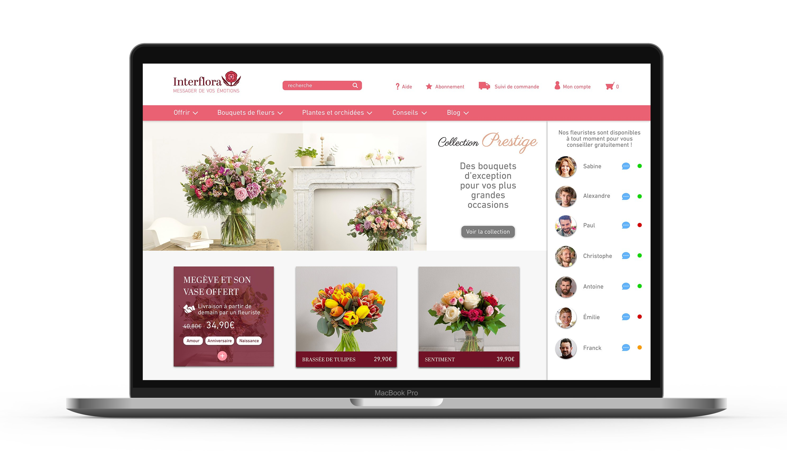
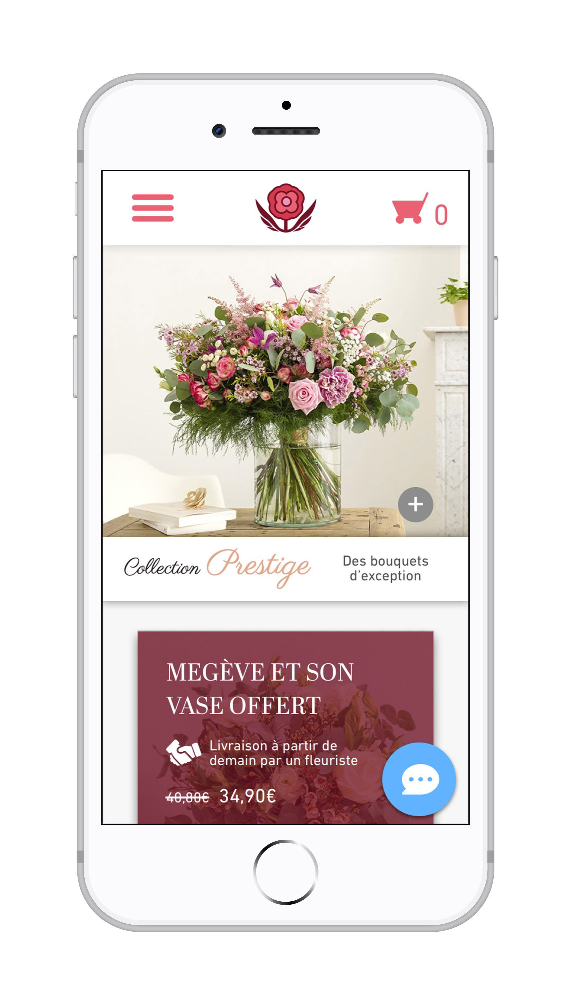
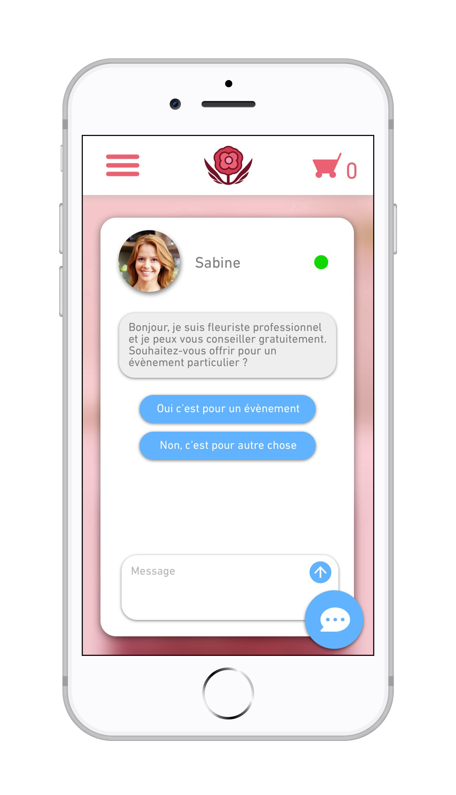
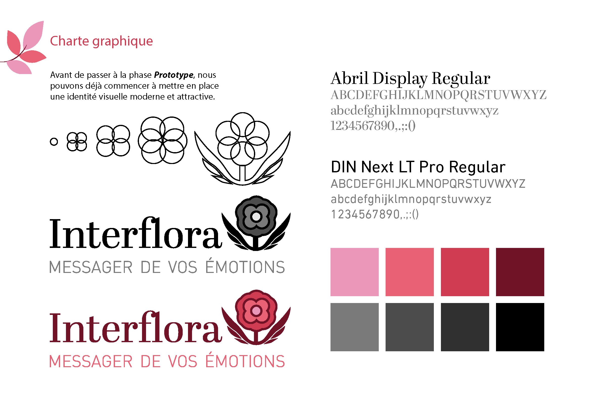
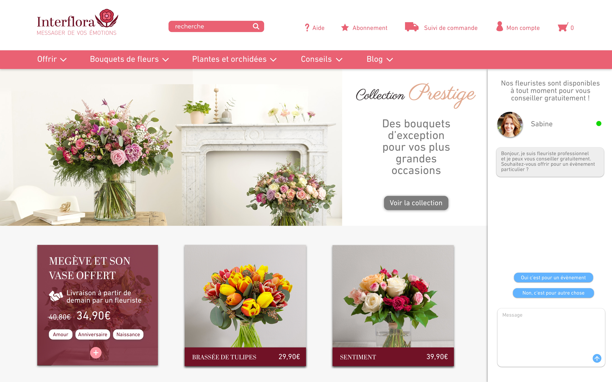

Introduction
Suite à mon mémoire, j’ai choisi de créer une application qui recenserait toutes les oeuvres littéraires connues et étudiées en classe pour permettre aux adolescents de s’immerger plus facilement. Et j’ai choisi d’appeler cette application UNY qui est un mélange entre « Young », « Unit » et « Story ».



TITRE
Loremp Ipsum
TITRE
Loremp Ipsum
